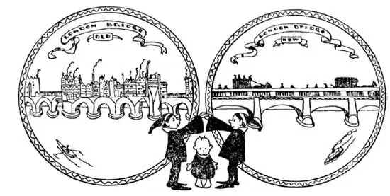
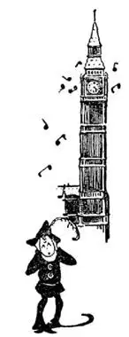
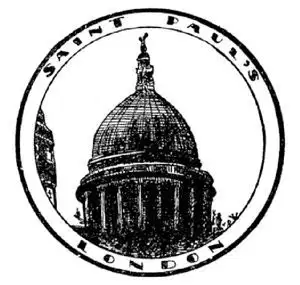
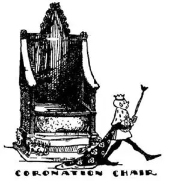
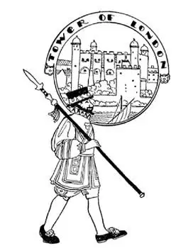

25
The Land of the Angles
盎格鲁人的土地

ENGLAND is an island.
Angles once lived on the island—no, not Angels—but people called Angles.
So it was called Angle-land.
We now spell it Eng-land
But we call it “Ingland.”
There are, however, two other countries on the island—Wales and Scotland—as well as England; so we should call the whole island “Great Britain.” Next door to the island of Great Britain is another is-land. It is Ire-land.
A ship, when it reaches England, cannot land its passengers wherever it chooses. There are only certain places. The shore may be too shallow and the ship would run aground and turn over, or the shore may be too rocky or too high with cliffs. Most people who go to England usually land on the west side at a place called Liverpool—Liver pool: what a peculiar name!— or at Southampton, which we can tell from the name is on the south side of England; or at London, which is on the east side. If they land at London the ship must go up a river spelled Thames but called “Temz.” English people spell many things one way and pronounce them another. The Thames runs right through London, but big ships cannot go up any farther than London Bridge. Have you ever played the game “London Bridge is Falling Down”? Well, London Bridge has fallen down several times, but each time it has been built up again; and the London Bridge that is there now I don’t believe will ever fall.

“London Bridge is Falling Down”
“伦敦铁桥垮下来”
London was a city when Christ was born, but it was then so small and so far off that Christ never heard of it. London is now the largest city i. t. w. W.
New York is tall, London is broad. New York buildings climb to the sky, fifty, seventy, a hundred stories high. London buildings seldom go higher than a few stories, but the city spreads out in every direction, mile after mile. People travel about London chiefly on buses, double-decker ones with seats on top as well as inside, but they also travel about London on trains that run under the ground.
London is the capital of England. The capit-o-1 of England—the building—is, of course, in London and it is on the banks of the Thames. It is called the Houses of Parliament, which means the Houses of Talk. It is the place where people not only talk but make the laws for England. A king rules over England, but the English people send men to Parliament to make their laws. As I had lived in sight of our Capitol in Washington for many years, I thought all capitols had to have domes, just as all cows had horns. It was therefore a shock for me to see that the English Capitol, the Houses of Parliament, had no dome—only square towers with a large clock in one of them, with a huge bell, called “Big Ben,” that strikes the hours.

大本钟
He strikes the hours
它敲响报时
There is, however, another great building in London that does have a dome like our Capitol. But that building is a church and it is called St. Paul’s. Indeed, it is said that the dome of our Capitol at Washington was copied from St. Paul’s, for St. Paul’s was built long before there was a Capitol at Washington, long before there was a Washington, and even long before there was a United States. They once had a great fire in London—they still call it the Great Fire, for it burned up most of the city. That was about three hundred years ago. Then a man with the name of a bird, Wren—Christopher Wren—built up much of the city that had been burned down. He built beautiful churches and other buildings; so people say it was well the old city was burned down, for it gave them the chance to make a beautiful city. St. Paul’s was one of the churches that Wren built.

It has a dome like the Capitol at Washington
它有和华盛顿国会大厦一样的圆屋顶
During World War II thousands of buildings were destroyed by bombs dropped on London by the Germans. Many of Christopher Wren’s churches were among the buildings burned or smashed by the bombs, but he had built so many that there are still some left. The people of London called these terrible bombings the Blitz. Great numbers of people were killed. The Blitz will be remembered, like the Great Fire, for hundreds of years to come, but no one can ever say, as they said about the Great Fire, that it was a good thing for the city. The only good thing about the Blitz was the bravery shown by the people of London.

The king sits on two seats at the same time
国王同时坐在两个座位上
A church that Wren didn’t build, a very old one, is called Westminster Abbey. Westminster Abbey is not only a church; it is also a tomb for famous people. In it are buried the most famous English people who have ever lived and died-kings and queens, great writers, great poets, great musicians, great soldiers. After World War I a soldier who had died on the battlefield in France, but whose name no one knew, was buried in Westminster Abbey to honor all those who had died without name or fame for a great cause. The place is called the Tomb of the Unknown Soldier.
In Westminster Abbey is a chair in which all the kings of England sit when they are crowned kings. It is called the Coronation Chair. Underneath the seat of the Coronation Chair is a large stone. Why the stone underneath the chair seat? Well, hundreds of years ago the country North of England named Scotland was separate from England. When the kings of Scotland were crowned they used a large stone for a seat. So when England and Scotland became one country, the people took the stone of Scotland and put it under the Coronation Chair of England, so that the king could sit on both seats while he was crowned king of both countries.

They are called “Beef-Eaters”
他们被叫做“食牛肉的人”
The oldest building in London, built long before the Great Fire, is one which from its name sounds like only part of a building. It is called the “Tower.” In the times long ago the Tower was a prison in which were put many famous people. Even princes and queens were put in this prison, and some of them were put to death. It is now a museum where are kept many interesting curiosities of those days—the steel armor that soldiers and their horses, and even their dogs, wore; the block and ax with which prisoners’ heads were cut off; and wonderful jewels which the kings wore in their crowns—huge diamonds and rubies as big as walnuts. The Queen’s crown is there on a white satin pillow. It is studded with jewels and a huge diamond called the “Koh-i-noor,” which means “mountain of light.” This stone was supposed to bring bad luck to any man who owned it, so a woman now owns it—the Queen. The guards of the Tower are called “Beef- Eaters” and should any one break into the cases in which are the jewels, the doors and gates of the Tower would automatically clang shut and the thief be caught a prisoner.
Did you ever collect stones or stamps, butterflies or coins? Well, grownups have collected treasures and curiosities from all over the World and brought them together in a wonderful museum, and the largest i. t. w. W. It is called the British Museum.
It is said that if all the streets in London were strung out in one line they would reach round the World. No one could ever know the names of all the London streets, not even the London policemen, who are called “Bobbies” and who are supposed to know everything. They may have to look for a street in a little book which they carry in an inside pocket. But every one knows the names of some of the streets—they are either so famous or so funny. There is Threadneedle Street and Cheapside. There is Pall Mall and Piccadilly, where are fine houses, hotels, clubs, and palaces. There is Fleet, Strand, Regent, and Bond Streets, which are shopping streets. There is Oxford Circus and Piccadilly Circus, but there is no “circus” there. A circus is simply a big open space where streets cross, and which we should call a Square or a Circle.
【中文阅读】
英格兰是一个岛。
盎格鲁人曾经住在这个岛上——不，不是天使 [1] ，而是叫做盎格鲁的人。
我们现在把它拼写成England（“盎格兰”）。
但是我们叫它“英格兰”（Ingland）。
然而岛上除了英格兰之外还有另外两个国家——威尔士和苏格兰；所以我们应该把整个岛叫做“大不列颠”。大不列颠岛旁边还有一个岛。那是爱尔兰。
轮船到达英国后不能随意靠岸让乘客登陆。只有某些地方才可以。有的海岸边水域可能太浅，轮船会搁浅翻船，有的海岸边岩石太多，还有的海岸可能太高周围都是悬崖。大部分到英国的人通常在西边的一个地方上岸，这个地方叫做利物浦——肝脏池塘 [2] ：多么奇特的名字！——或者在南安普顿上岸，从名字我们就能知道它在英国的南部；或者在伦敦上岸，伦敦位于英国的东部。如果他们在伦敦上岸，轮船就必须沿一条叫做泰晤士的河向上驶去，“泰晤士”的英语拼写是Thames。英国人有很多单词拼写是一套，发音又是另一套。泰晤士河正好流经伦敦，但大轮船最远只能开到伦敦桥。你有没有玩过“伦敦铁桥垮下来”的游戏？你知道吗？伦敦桥垮塌过好几次，但每次又重建起来；现在的伦敦桥，我想不会再垮塌了。
耶稣诞生的时候伦敦就已经是个城市了，但那时伦敦很小，又很遥远，因此耶稣从来就没有听说过这个地方。现在伦敦是世界上最大的城市。
纽约很高，伦敦很宽。纽约的楼房高耸入云，高达五十层、七十层，还有一百层的。伦敦的楼房大多数只有几层高，但是整个城市向各个方向不断扩展，扩展了1英里又1英里。到伦敦旅游的人主要乘坐公共汽车，公共汽车是那种车里和车顶都有座位的双层公共汽车，但他们也乘坐地铁在伦敦游玩。
伦敦是英国的首都。英国的国会大厦——这栋建筑——当然也在伦敦，位于泰晤士河岸，叫做“议会大厦”，意思就是“谈话大楼”。人们在那里不仅仅谈话，而且还制定英国的法律。英国由国王统治，但英国人派代表到议会去制定法律。由于我在华盛顿住了很多年，天天都能看到我们的国会大厦，我就以为所有的国会大厦都必须有圆屋顶，就像所有的牛都有角一样。因此当我看到英国的国会时真是大吃一惊，他们的议会大厦没有圆屋顶——只有一些方形的塔楼，其中一个塔楼上装着一个大时钟，里面还有一口巨大的钟叫做“大本钟”，它用于报时。
然而，在伦敦另有一栋大楼还真有和我们的国会大厦一样的圆屋顶。但那个楼是一个教堂，叫做圣保罗大教堂。实际上，据说华盛顿的国会大厦的圆屋顶是仿照圣保罗大教堂建的，因为在华盛顿有国会大厦之前很久，在有华盛顿这么个人之前很久，甚至在有美国这么个国家之前很久，圣保罗大教堂就建好了。伦敦曾经发生过一次大火——人们现在仍然称这次大火为“伦敦大火”，因为大火烧掉了大部分城市。那是大约三百年前的事了。后来有个叫雷恩的人——雷恩也是一种鸟的名字 [3] ——克里斯托弗 · 雷恩——重建起了大部分被烧毁的城市。他建造了很多美丽的教堂和别的建筑；因此人们说旧城被烧毁是一件幸运的事，因为这给了他们一个机会建造一个美丽的城市。圣保罗大教堂是雷恩建造的教堂之一。
在第二次世界大战期间，德国人投放的炸弹摧毁了伦敦成千上万栋楼房。在烧毁和炸掉的建筑物中，就有许多是克里斯托弗 · 雷恩所建造的教堂，因他建造的教堂很多，所以总有一些幸存下来了。伦敦人把德军可怕的轰炸叫做“闪电式空袭”。很多人遇难。这次空袭和“伦敦大火”一样，在以后的几百年里都将被人们记住，但没有人会说空袭对城市像伦敦大火那样有好处。空袭唯一的好处就是它让伦敦人表现出大无畏的精神。
有一个教堂不是雷恩建的，一个很古老的教堂，叫做威斯敏斯特教堂。威斯敏斯特教堂不仅是个教堂；它还是很多名人的墓地。里面安葬着英国历史上最著名的人物——国王和王后、伟大的作家、伟大的诗人、伟大的音乐家、伟大的士兵。在第一次世界大战之后，人们将一名在法国战场上牺牲但无人知道其姓名的士兵安葬在威斯敏斯特大教堂，以此纪念所有那些为了伟大事业而默默无闻牺牲的无名英雄。那个地方叫做无名战士之墓。
威斯敏斯特大教堂里有一把椅子，那是所有英国国王加冕时坐的椅子。人们把它叫做加冕椅。在加冕椅座位的下面有一块大石头。为什么有块大石头在椅子座位下呢？唔，是这样的，在几百年前，英格兰北边的国家苏格兰是独立于英格兰的。当苏格兰的国王加冕时，他们用一块大石头当做座位。因此当英格兰和苏格兰变成一个国家时，人们把苏格兰的石头带到英格兰放在英格兰加冕椅的下面，这样国王被加冕为两个国家的国王时就能坐在两个座位上了。
伦敦有座最古老的建筑物在伦敦大火发生之前很早就建起了，它的名字听起来像某个建筑物的一部分。它叫“伦敦塔”。很久以前，伦敦塔是座监 狱，里面关押了很多著名的人士。甚至一些王子和王后也都曾先后被关押在里面，其中有些还被处以死刑。现在伦敦塔是个博物馆，收藏了很多过去的稀奇之物——士兵和他们的战马甚至狗穿的钢盔甲；砍掉囚犯头颅用的垫头木和斧头；国王的王冠上的稀世珠宝——硕大的钻石和胡桃般大的红宝石。女王的王冠就放在一个白色的缎子枕头上。上面镶有很多珠宝和一颗巨大的钻石，这颗钻石叫“科—依—诺尔钻石”，意思是“光之山”。这颗钻石被认为会给每个拥有它的男人带来厄运，所以现在它属于一个女人——女王。伦敦塔的看守被叫做“食牛肉的人”，一旦有人强行打开装珠宝的箱子，伦敦塔的大小门就会咣的一声自动合上，盗犯也就当场被捉，成为囚犯。
你收集过石头或者邮票、蝴蝶或者硬币吗？成年人把从世界各地搜集来的珍宝奇物收藏在一个非同寻常的博物馆里，它是世界上最大的博物馆，叫大英博物馆。
据说如果把伦敦所有的街道连成一条线就能绕世界一周。没有人能把伦敦所有街道的名称都记住，就是伦敦的警察也不能，伦敦的警察常被叫做“博比” [4] ，人们认为他们无所不知。他们衣服内侧的口袋装了一本小册子，有的街道只得在小册子里查询才能找到。但是有些街道的名称是人人皆知的——这些街道要么很有名，要么很有趣。比如针线街和便宜街；还有铁圈球场大街和皮卡迪利大街，那里有很多精美的房屋、旅馆、俱乐部和宫殿。还有舰队街、海滨街、摄政街和邦得街，这些都是购物街。还有牛津广场和皮卡迪利广场，那里可没有什么“马戏团”哦 [5] 。他们的广场其实就是一处大的街道交叉口，我们一般把那叫做大转盘。